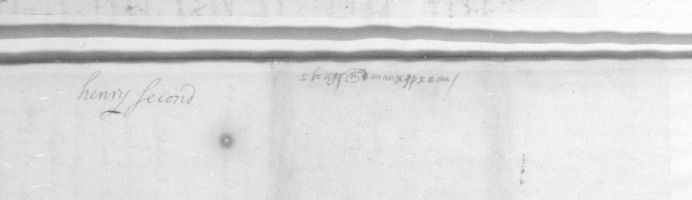

01 The manuscript
The body occupies ten written sides, ff. 152r–156v. Gallica view 153 shows f. 152r on the right; views 154–157 each show two cipher pages, and view 158 shows f. 156v on the left. The collection’s item number 67 is not a folio number. A presumed dorse, f. 157v on view 159, has the cipher word Advertissemens and a later clear annotation, henry second. That later annotation conflicts with the dated heading and is not used to change the date.
The writer says that Fumel is “mon prochain voisin” and names “le sieur de Montluc” in the third person. Neither detail securely identifies him. The “chief” and the expected “prince” remain unnamed in the reading; identifying them with a particular historical figure would require additional evidence.

02 What the writer reports
The opening says that affairs have gone “de mal en pis”: preaching and assemblies continue, sometimes with two preachers where there had been one. The writer names noblewomen attending the sermons, says that rebels hope to gain time and foreign support, and reports an armed gathering at Clairac. He alleges that the Caulmont family shelters ministers and assemblies. Reclus and Boissonade, sent to court for the Agenais, are said to be concealing the truth, with support from the local magistrates.
The central pages concern Biron’s raising and dismissing soldiers, rebel captains at Nérac, and the proposed examination of those captains. Lioux, described as Montluc’s brother, is accused of threats. The writer says he dares leave his house only at night and considers withdrawing to court. He forwards a religious composition called an edict made by God the Father, a letter from an Agen townsman, and a letter from the keeper of the seals at Cahors. He also reports hopes of aid from an unnamed prince and foreigners near Geneva and the Swiss cantons. These are the author’s reports and allegations; the cipher reading alone does not establish their truth.
03 Full normalized French reading
Manuscript line numbers are retained. The line marked 153r.14m is the marginal addition. Spelling, punctuation, word boundaries and u/v–i/j are lightly normalized. This is an editorial reconstruction, not a diplomatic edition or the automatic output of a complete key. Unbracketed text has grade I (inferred from the partial substitution, image and context); bracketed passages have grade M (uncertain). [..] retains a mark whose function is unresolved. There are no primary-key-confirmed H or independent-plaintext-confirmed C grades.
152r
| Line | Editorial reading |
|---|---|
| 152r.01 | Despues les derniers advertissemens |
| 152r.02 | que envois a vostre grandeur, les |
| 152r.03 | affaires de pardeça ont discouru de mal |
| 152r.04 | en pis, continuant les presches et |
| 152r.05 | assemblees plus que jamais, et aux villes |
| 152r.06 | ou solloit avoir ung predicant, il en y a |
| 152r.07 | a present deux, ausquels presches il |
| 152r.08 | y a deux notables femmes que y assistent |
| 152r.09 | ordinairement avecques grand suitte, que |
| 152r.10 | sont madame de Castelpers et mademoiselle |
| 152r.11 | de Boesse, femme du cappitaine |
| 152r.12 | [Montseuignac?]. |
| 152r.13 | Vray est que les rebelles ayant entendu |
| 152r.14 | que le roy envoyoit pardeça le sieur de |
| 152r.15 | Termes avecques quelques compaignies, [ils?] |
| 152r.16 | ont praticque quelques seigneurs a faire |
| 152r.17 | escripre a sa majesté et luy faire entendre |
| 152r.18 | que ung chacun de pardeça vit soubs |
| 152r.19 | l'obeissance du roy, ce qui pourroit |
| 152r.20 | avoir faict ce rapport, tant pour ung |
| 152r.21 | profit particulier qui se pourroient |
| 152r.22 | estre ressentis que pour estre de la |
| 152r.23 | ligue desdicts rebelles. |
| 152r.24 | A quoy ne fault que le roy et vostre |
| 152r.25 | grandeur s'arreste aulcunement, car ne font |
| 152r.26 | cella que pour se faire forts, augmenter leurs |
| 152r.27 | trouppes et gaigner temps pour avoir secours |
| 152r.28 | de quelques estrangiers qui disent se tenir |
| 152r.29 | asseures. |
152v
| Line | Editorial reading |
|---|---|
| 152v.01 | Il est a present facil les chastier, et pour |
| 152v.02 | l'advenir je ne scai qu'il pourra estre, pour |
| 152v.03 | les grandes factions et menees qui se y |
| 152v.04 | briguent avecques beaucoup de qualité de |
| 152v.05 | personnes. |
| 152v.06 | Et que soit vray, puis peu de jours il |
| 152v.07 | c'est faict une assemblee en la ville |
| 152v.08 | de Clairac en Agenois d'environ deux |
| 152v.09 | mil rebelles, ou fust arresté et |
| 152v.10 | conclut que si le roy envoyoit forces |
| 152v.11 | de pardeça, qu'ils se mectroient en deffence, |
| 152v.12 | disans qu'ils ayment mieulx mourir les |
| 152v.13 | armes en main que si le roy les faisoit |
| 152v.14 | executer par ung bourreau. |
| 152v.15 | Leurs trouppes et sectes augmentent |
| 152v.16 | touts les jours. |
| 152v.17 | Vostre grandeur ne pourroit croire le |
| 152v.18 | nombre de grands seigneurs et noblesse qui |
| 152v.19 | ont intelligence avecques ceste canaille. |
| 152v.20 | Vray est qu'ils ne se declairent poinct, |
| 152v.21 | mais [ils?] y donnent toute la faveur |
| 152v.22 | et conseil qu'ils peuvent. |
| 152v.23 | Le frere du seigneur de Caulmont est |
| 152v.24 | sieur et abbé dudict Clairac. Lesdicts de |
| 152v.25 | Caulmont n'ont seigneurie, place ne chasteau |
| 152v.26 | ou [ils?] ne ayent de ministres et qu'il ne |
| 152v.27 | s'i face assemblee de rebelles, |
| 152v.28 | de quoy ay cy devant adverti vostre |
| 152v.29 | grandeur. |
| 152v.30 | Le juge des terres dudict seigneur de |
| 152v.31 | Caulmont nommé Reclus est parti pour |
153r
| Line | Editorial reading |
|---|---|
| 153r.01 | aller en court, lequel par les moyens |
| 153r.02 | desdicts de Caulmont et par la faveur |
| 153r.03 | du chief, il a esté esleu pour les raisons |
| 153r.04 | que ay cy devant escriptes a vostre |
| 153r.05 | grandeur pour aller faire les remonstrances |
| 153r.06 | des dolleances pour le tiers estat du |
| 153r.07 | pays d'Agenois, avecques ung scindic |
| 153r.08 | du pays d'Agenois nommé Boissonade, |
| 153r.09 | lesquels sont a present pardela. |
| 153r.10 | [Ils?] pallieront et dissimuleront la |
| 153r.11 | verité de toutes les choses qui |
| 153r.12 | sont passees pardeça, |
| 153r.13 | car fust arresté par le juge maige |
| 153r.14 | et aultres magistrats du siege presidial |
| 153r.14m | assemblez en la chambre du conseil |
| 153r.15 | d'Agen qu'il n'estoit besoing que lesdicts |
| 153r.16 | delegué et scindic remonstrassent la |
| 153r.17 | toutalle verité des choses pour [n'?]irriter |
| 153r.18 | le roy et eviter que sa majesté |
| 153r.19 | n'executast sa rigueur sur ledict |
| 153r.20 | pays d'Agenois. |
| 153r.21 | Si vostre grandeur trouvoit bon faire ouir |
| 153r.22 | particulierement lesdicts scindic et delegué, |
| 153r.23 | entendres par leur bouche de grandes choses |
| 153r.24 | qu'ont discouru audict pays d'Agenois. |
| 153r.25 | Ledict juge maige est parti pour s'en aller pardela |
| 153r.26 | expressement pour solliciter lesdicts scindic |
| 153r.27 | et delegué pour leur faire taiser la verité |
| 153r.28 | des choses discourues audict pays d'Agenois. |
| 153r.29 | Vostre grandeur advisera s'il sera bon |
| 153r.30 | de le surprendre sur le faict, pendent |
| 153r.31 | qu'il sera pardela, et luy faire rendre raison |
| 153r.32 | du devoir qu'il a faict en sa province. Vostre |
153v
| Line | Editorial reading |
|---|---|
| 153v.01 | grandeur a beaucoup de memoires contre luy |
| 153v.02 | contenent les abus et mal- |
| 153v.03 | versations commises en son estat |
| 153v.04 | de chief de province. |
| 153v.05 | Ledict Reclus, delegué a la judicature |
| 153v.06 | pour lesdicts seigneurs de Caulmont de la |
| 153v.07 | ville de Thonens, Caulmont et aultres |
| 153v.08 | lieux et places, [..] en toutes |
| 153v.09 | lesquelles il y a ordinairement ministres |
| 153v.10 | predicans, au presche desquels il a |
| 153v.11 | assisté et luy present se y est |
| 153v.12 | faict assemblee de rebelles. S'il est |
| 153v.13 | ouy sur lesdicts faicts, je ne scay |
| 153v.14 | quelle raison il pourra rendre du |
| 153v.15 | debvoir de justice qu'il y a faict. |
| 153v.16 | Monsieur de Biron, puis ung mois, il fist |
| 153v.17 | une assemblee d'environ cinq cens soldats, |
| 153v.18 | la pluspart arcabousiers, lesquels il |
| 153v.19 | disoit vouloir conduire suivant le |
| 153v.20 | commandement du roy en la ville de |
| 153v.21 | Bregeyrac pour gaigner le chasteau d'icelle |
| 153v.22 | et executer sur les habitans quelque |
| 153v.23 | commandement que sa majesté l'avoit |
| 153v.24 | chargé. Toutesfois, ayant faict ladicte |
| 153v.25 | assemblee, apres avoir communiqué aux |
| 153v.26 | principaulx habitans dudict Bregerac, il |
| 153v.27 | en renvoya lesdicts soldats et s'en |
| 153v.28 | retourna en sa maison sans faire aultre |
| 153v.29 | execution, chose qui ne donne a presumer |
154r
| Line | Editorial reading |
|---|---|
| 154r.01 | rien de bon pour les abus que se y peuvent |
| 154r.02 | commectre, deaultant qu'il a faict le |
| 154r.03 | semblable a Villeneufve, Montflanquin et |
| 154r.04 | aultres villes suspectes de pardeça. |
| 154r.05 | Je ne scay s'il a faict ses choses du |
| 154r.06 | mandement du roy ou vostre; je n'ay |
| 154r.07 | voullu faillir vous en donner advertissement, |
| 154r.08 | pour ce que despuis qu'il a eu parlementé |
| 154r.09 | avecques eulx, ils ne se sont |
| 154r.10 | amendés aulcunement, ains sont pis |
| 154r.11 | que jamais. |
| 154r.12 | Aussi je ne scay si le roy et vostre |
| 154r.13 | grandeur estes advertis que ledict sieur |
| 154r.14 | de Biron est allié de Mesme qu'est |
| 154r.15 | ung des principaulx cappitaines des |
| 154r.16 | rebelles de pardeça. |
| 154r.17 | Ledict Mesme, le cappitaine La Caze, le |
| 154r.18 | cappitaine Jehan de Mesmes, le cappitaine |
| 154r.19 | La Garde de Villeneufve, le cappitaine |
| 154r.20 | Chaulmont et aultres chiefs des rebelles, |
| 154r.21 | dont cy devant vous ay envoyé leurs noms, |
| 154r.22 | sont pardeça faisant leurs menees |
| 154r.23 | accoustumees, residans la pluspart du |
| 154r.24 | temps en la ville de Nerac; mesmes |
| 154r.25 | ledict Mesme y est a present malade |
| 154r.26 | et se est faict conduire dans une |
| 154r.27 | lectiere puis huict jours. |
| 154r.28 | Si vostre grandeur trouvoit bon que, pendent |
| 154r.29 | que le chief est pardela et qu'il se veult dire |
154v
| Line | Editorial reading |
|---|---|
| 154v.01 | innocent de la conspiration, que le roy leur |
| 154v.02 | commandast de representer les susdicts |
| 154v.03 | cappitaines pour les faire respondre par leur bouche, attendu |
| 154v.04 | mesmes qu'ils ont residé cy devant aupres de la |
| 154v.05 | personne dudict chief et suite de sa court |
| 154v.06 | en son gouvernement de Guyenne, et |
| 154v.07 | resident a present en sa ville de Nerac |
| 154v.08 | la pluspart du temps. Si sa majesté |
| 154v.09 | faict ledict commandement, ce sera bien |
| 154v.10 | le moyen de les pouvoir recouvrer, |
| 154v.11 | aultrement il sera tresque difficil. |
| 154v.12 | Ayants recouvertz les susdicts cappitaines, |
| 154v.13 | ou pour le moins de la trouppe d'iceulx |
| 154v.14 | La Caze et Mesme, le roy pourra scavoir |
| 154v.15 | par la entierement les conspirations |
| 154v.16 | et entreprinses faictes contre sa |
| 154v.17 | majesté et son royaulme. |
| 154v.18 | Monsieur de Lioux, frere du sieur de Montluc, |
| 154v.19 | s'en va en court. Il est composé de mesme |
| 154v.20 | humeur que beaucoup d'aultres qui veullent |
| 154v.21 | servir le roy masqués. Je vous en ay donné |
| 154v.22 | cy devant advertissement, et croy que le |
| 154v.23 | roy et vostre grandeur ne vous y fierés |
| 154v.24 | et aurés entendu leurs menees et |
| 154v.25 | factions. |
| 154v.26 | Ledict de Lioux, pendent qu'il estoit |
| 154v.27 | pardeça, a faict de grands menasses a |
155r
| Line | Editorial reading |
|---|---|
| 155r.01 | ceulx qui font service au roy, disant |
| 155r.02 | qu'il n'a personne qu'aye parlé contre |
| 155r.03 | le chief qu'avant peu de temps ne luy |
| 155r.04 | couste la vie, |
| 155r.05 | Et de pareilles menasses et parolles |
| 155r.06 | usent touts ceulx de la compaignie dudict |
| 155r.07 | chief, mesmes ceulx qui l'avoient acompaigné |
| 155r.08 | a son voiaige de court, lesquels s'en |
| 155r.09 | sont retournés de pardeça et faisant |
| 155r.10 | leur monstre dernier en la ville |
| 155r.11 | d'Agen tenoient publiquement lesdicts |
| 155r.12 | langaiges. |
| 155r.13 | Il se font assemblees touts les |
| 155r.14 | jours de rebelles, de la pluspart desquelles |
| 155r.15 | le cappitaine La Caze est le conducteur |
| 155r.16 | et chief. Si le roy n'envoie quelcun |
| 155r.17 | pardeça pour les chastier, je ne faicts |
| 155r.18 | doubte qu'il n'y aye quelque grand trouble |
| 155r.19 | ou inconvenient a l'advenir. |
| 155r.20 | Lesdicts rebelles m'ont rendu en tel |
| 155r.21 | estat que je n'ause sortir de ma |
| 155r.22 | maison si ce n'est de nuict, et font |
| 155r.23 | courir le bruict que monsieur de Termes |
| 155r.24 | et ses compaignies que l'on |
| 155r.25 | disoit qui venoient pardeça ont esté |
| 155r.26 | contramandes pour s'en retourner, chose |
| 155r.27 | qu'a donné ung grand plaisir et |
| 155r.28 | contentament ausdicts rebelles |
| 155r.29 | et pour continuer leurs factions. |
155v
| Line | Editorial reading |
|---|---|
| 155v.01 | Si ainsi estoit, et pensant que vostre |
| 155v.02 | grandeur ne le trouvast mauvais, pour |
| 155v.03 | la conservation de ma vie je me |
| 155v.04 | retirerois a la suicte de la court |
| 155v.05 | pour illec m'emploier en treshumble |
| 155v.06 | obeissance a tout ce que le roy |
| 155v.07 | et vostre grandeur vous plairoit |
| 155v.08 | me faire commander, car aussi bien, |
| 155v.09 | ayant lesdicts rebelles l'auctorité |
| 155v.10 | de pardeça telle qu'ils l'ont, m'ont osté |
| 155v.11 | touts moyens de pouvoir pourveoir |
| 155v.12 | aulcunement a mes affaires si ce n'est |
| 155v.13 | au hasard de ma vie. |
| 155v.14 | Lesdicts rebelles continuent et font |
| 155v.15 | journellement de nouvelles compositions |
| 155v.16 | qu'ils sement et envoyent par tout ce pays |
| 155v.17 | pour oster le menu peuple de leur |
| 155v.18 | bonne voye et les rendre scismaticques, |
| 155v.19 | comme vostre grandeur pourra veoir |
| 155v.20 | par ung double que vous envoie, qu'ils intitulent |
| 155v.21 | l'edict faict par Dieu le pere, combien |
| 155v.22 | que croy qu'il vous en a esté envoyé |
| 155v.23 | d'ailleurs. |
| 155v.24 | Estant ce porteur prest a monter a |
| 155v.25 | cheval, ay receu une lettre escripte |
| 155v.26 | et signee par ung bourgeois de la |
| 155v.27 | ville d'Agen, homme digne de foi, sur laquele |
| 155v.28 | vostre grandeur peult prendre |
156r
| Line | Editorial reading |
|---|---|
| 156r.01 | fondement, et s'il vous plaist prendre |
| 156r.02 | la peine de la veoir, trouverés que |
| 156r.03 | contient advertissemens de grand |
| 156r.04 | consequance, mesmes des desordres |
| 156r.05 | que se commectent et continuent |
| 156r.06 | journelement par ces rebelles de |
| 156r.07 | pardeça. Il est besoing que le roy et |
| 156r.08 | vostre grandeur y pourvoie promptement. |
| 156r.09 | Le langaige que les rebelles tienent |
| 156r.10 | entre eulx, ainsi que j'ay peu descouvrir, |
| 156r.11 | est qu'ils ne taichent que a gaigner quelque |
| 156r.12 | peu de temps pour avoir le secours qu'ils |
| 156r.13 | se tienent asseures d'ung prince et |
| 156r.14 | de quelques estrangiers du costé |
| 156r.15 | de Geneve et cantons de Suisses, |
| 156r.16 | entre les mains duquel prince |
| 156r.17 | s'asseurent mectre deux villes |
| 156r.18 | fortes et de frontiere de ceste |
| 156r.19 | Guyenne. Il est tresnecessaire que le |
| 156r.20 | roy et vostre grandeur y pourvoyés |
| 156r.21 | diligement, vous asseurant qu'il se y |
| 156r.22 | faict de grands menees et avec telles |
| 156r.23 | intelligences de tant d'endroicts que |
| 156r.24 | je ne scai qu'il en pourra advenir. Je |
| 156r.25 | n'en oserois escripre plus avant |
| 156r.26 | que je ne sois mieulx certioré des |
| 156r.27 | choses. |
| 156r.28 | Monsieur de Fumel, qu'est mon prochain |
| 156r.29 | voisin, est arrivé de la court puis peu |
| 156r.30 | de jours et puis sadicte venue il use |
156v
| Line | Editorial reading |
|---|---|
| 156v.01 | contre moi de grands menasses, je n'ai |
| 156v.02 | peu scavoir les occasions. Je avois |
| 156v.03 | baillé ung pacquet audict sieur de |
| 156v.04 | Fumel en s'en allant a la court pour le |
| 156v.05 | faire tenir a vostre grandeur, ou il |
| 156v.06 | y avoit advertissemens de grand |
| 156v.07 | consequance, ensemble une lettre |
| 156v.08 | que le chief m'avoit escripte. Je |
| 156v.09 | supplie vostre grandeur me faire |
| 156v.10 | advertir si avés receu ledict |
| 156v.11 | pacquet, advertissemens et lettre |
| 156v.12 | dudict chief. |
| 156v.13 | J'ai aussi receu presentement une |
| 156v.14 | lettre du garde des sceaulx du |
| 156v.15 | siege presidial de Cahors, laquelle |
| 156v.16 | vous envoie, et par icelle vostre |
| 156v.17 | grandeur pourra entendre les |
| 156v.18 | desordres que se commectent |
| 156v.19 | journellement par les rebelles |
| 156v.20 | es provinces de pardeça. |
157v — presumed dorse
| Line | Editorial reading |
|---|---|
| 157v.01 | Advertissemens. |
04 Method and the partial key
The earlier project attempt transcribed the ten pages and used a French language model in an annealing solver. Its notes record that a one-sign-per-letter treatment failed, then that repeated compound units and common words provided the first readable passages. This continuation used that work explicitly. It did not independently rediscover the initial key.
Repeated groups support, for example, T zo x → que, W x m → les,
and h x → de. The inherited ASCII names stand for manuscript shapes, not literal Latin letters.
Short word signs include roy and pour. Several apparent homophones are still entangled with transcription inconsistencies:
the same ASCII label sometimes represents different looped shapes or crosses. Consequently the partial decoder still produces corrupt words
where the images and linguistic context permit an editorial reading. Its output is preserved, not silently replaced by the normalized prose.
Regional enlargements resolved the former blanks Si ainsi estoit, qu’ils sement and pour oster le menu peuple, among others. A horizontal line filler on f. 155v had been mistaken for the word code pour. The local copy of George Lasry’s Charles IX–du Croc table was inspected and did not match the target’s assignments. The Henri II tables could not be retrieved: the source site returned HTTP 503. No successful Henri II table test is claimed.
The coverage count uses the inherited transcription’s longest-first sign units, including compound ASCII labels as single units. It includes the new margin and endorsement and excludes the misread filler. It is a reproducible editorial count, not a definitive census of every distinct graphic sign. All 191 units on the seven bracketed lines are conservatively marked unresolved, giving 8,071/8,262. The exact independently validated symbol-recovery rate is unknown.
05 Seven small uncertainties
- 152r.12: the name tentatively read Montseuignac. Enlarged signs support this reading, but its exact spelling and historical identification are unconfirmed.
- 152r.15, 152v.21, 152v.26, 153r.10: short connected groups. The sentence meanings support plural-pronoun or relative expansions; exact ils / qui / qu’ils distinctions remain unconfirmed.
- 153r.17: a possible negative in pour n’irriter le roy. The sense supports it; the exact initial sign remains doubtful.
- 153v.08: a small mark beside a canceled group, possibly a further cancellation remnant. It has not been silently discarded.
Every residual was retried against enlarged images and repeated forms. The reading offers the whole narrative; it does not supply a completely recovered alphabet, an independently checked plaintext, or proof that no earlier reading exists anywhere.

06 Sources and reproducible files
- Bibliothèque nationale de France, français 3157 no. 67: Gallica, opening at f. 152r; presumed dorse, view 159.
- Biblissima catalogue description of français 3157, including item 67.
- Satoshi Tomokiyo, George Lasry’s Solutions of Unsolved Ciphers: the local archived Charles IX table, dated 25 May 2022, was checked. Online Henri II material was inaccessible during this continuation.
- Full reading, verification and uncertainty log, and coverage audit.
The repository folder preserves the inherited notes, transcription, partial key and mechanical output, together with the revised reading and scripts. No DECODE record is known for this target; no external database edit was made.